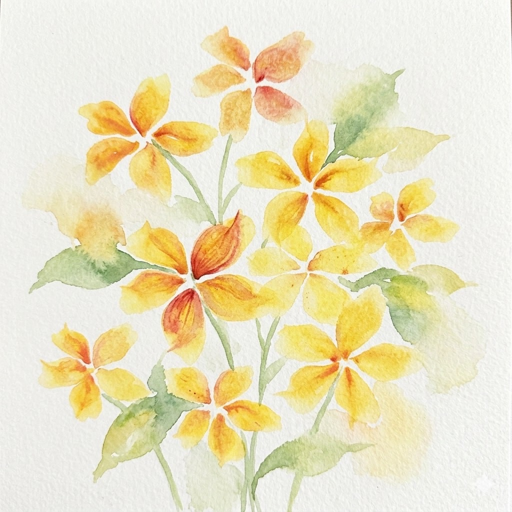
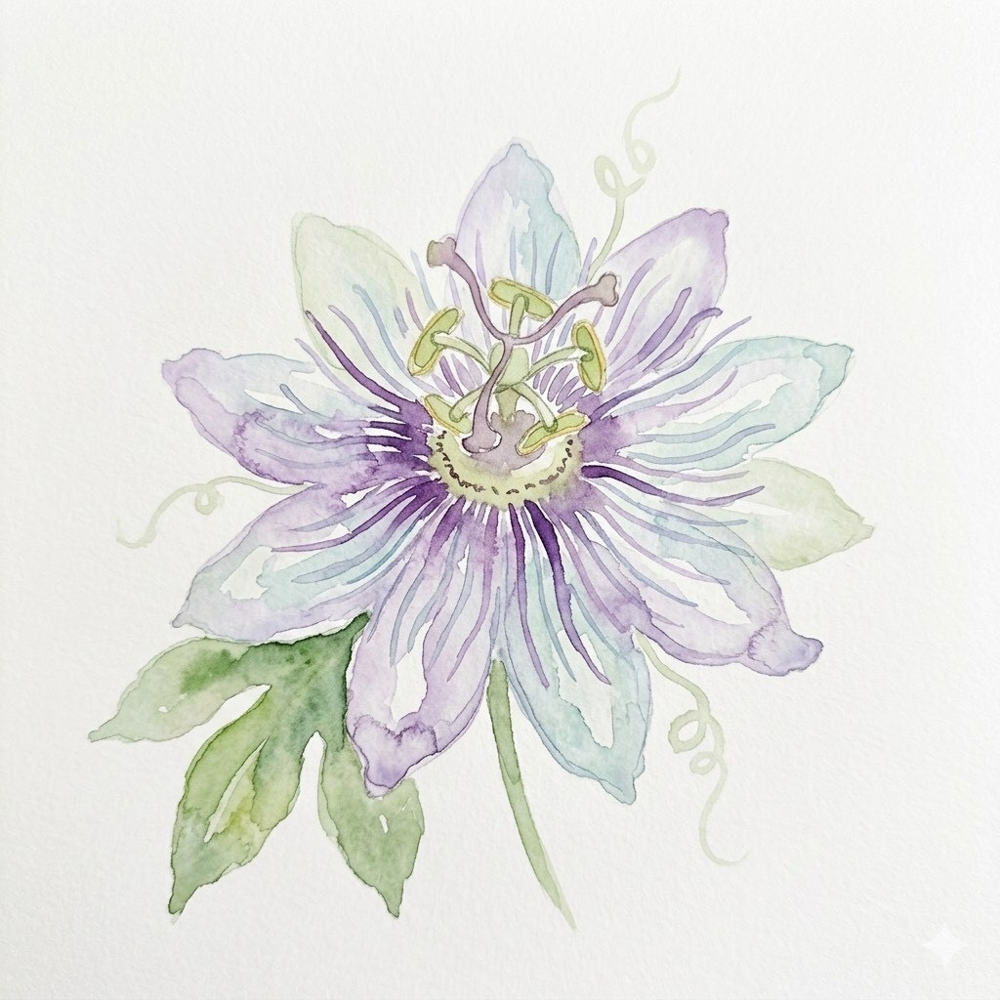
專業課程推廣
透過嚴謹的宇宙與生命史規律學習，在神聖的幾何秩序中建立清明意識，沉澱內在信念。
- 十二感官工作坊
- 星智學與生命史系列
- 園藝治療 / 工作坊
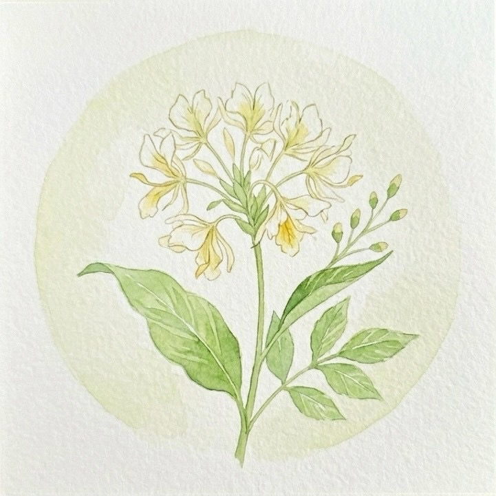
生活藝術課程
透過藝術、手作與課程的呼吸流動，陪伴大人與孩子在自然節奏中安定，找回內在靈魂的和諧。
- 生活藝術相關講座/課程
- 華德福教育體驗營
- 季節營隊
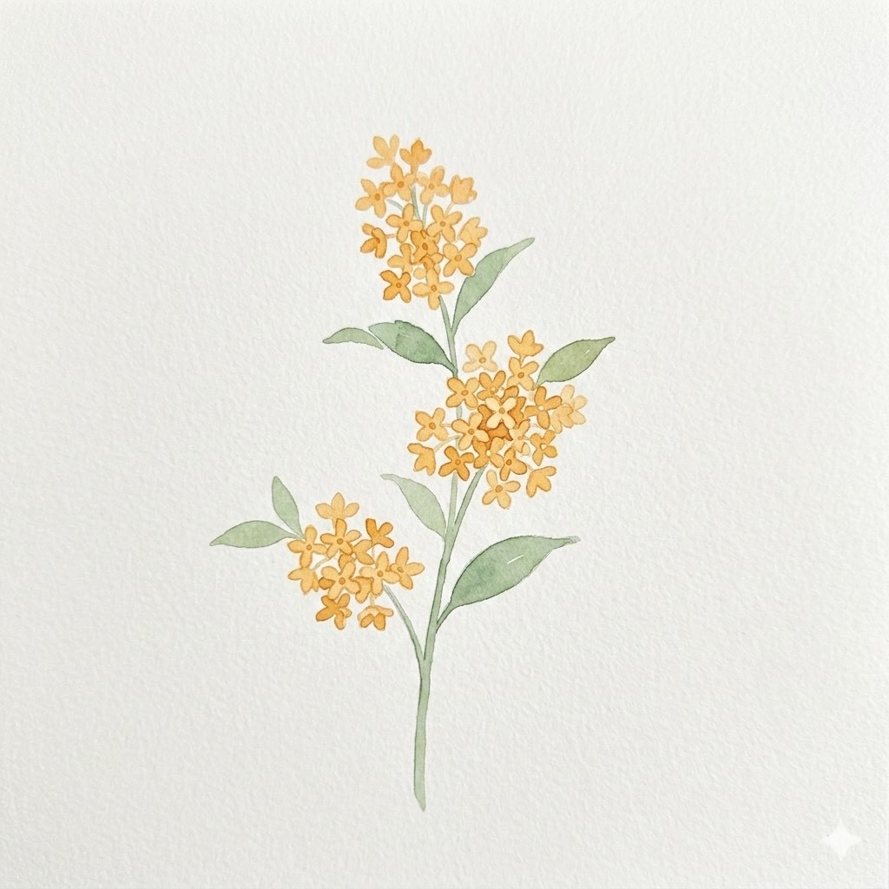
四季節慶
順應大自然的呼吸與節氣轉換，透過季節的儀式感，讓孩子將宇宙的韻律深深吸入靈魂。
- 春夏秋冬四季節慶典儀式
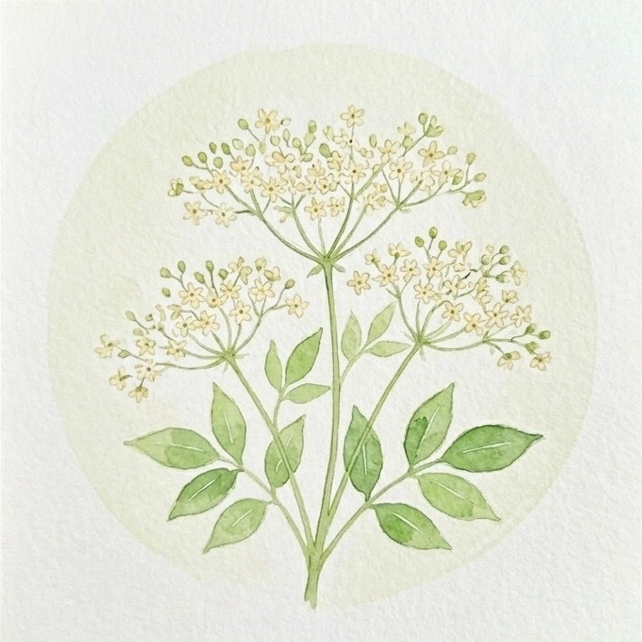
療育團隊
帶著深層的承載、理解與轉化力量，看見孩子發展的結節，陪伴受挫的身心走向重生。
- 兒童研討（含兒童觀察）
- 治療教育 / 校醫諮詢
- 輔正教育
- 藝術療育場域
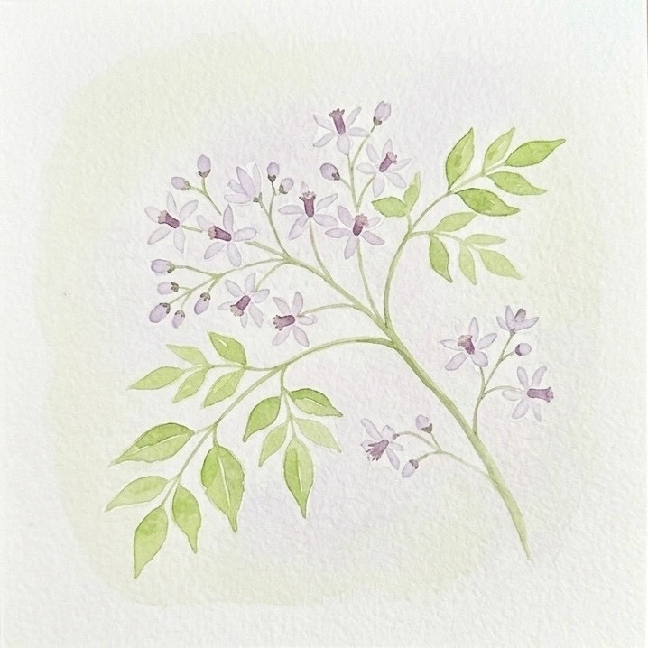
讀書會
在共同陪伴的溫床中，溫柔咀嚼育兒卡關與陪伴青少年的苦澀，內化並體會苦盡甘來的智慧甘甜。
- 治療教育12講讀書會
- 青少年陪伴讀書會
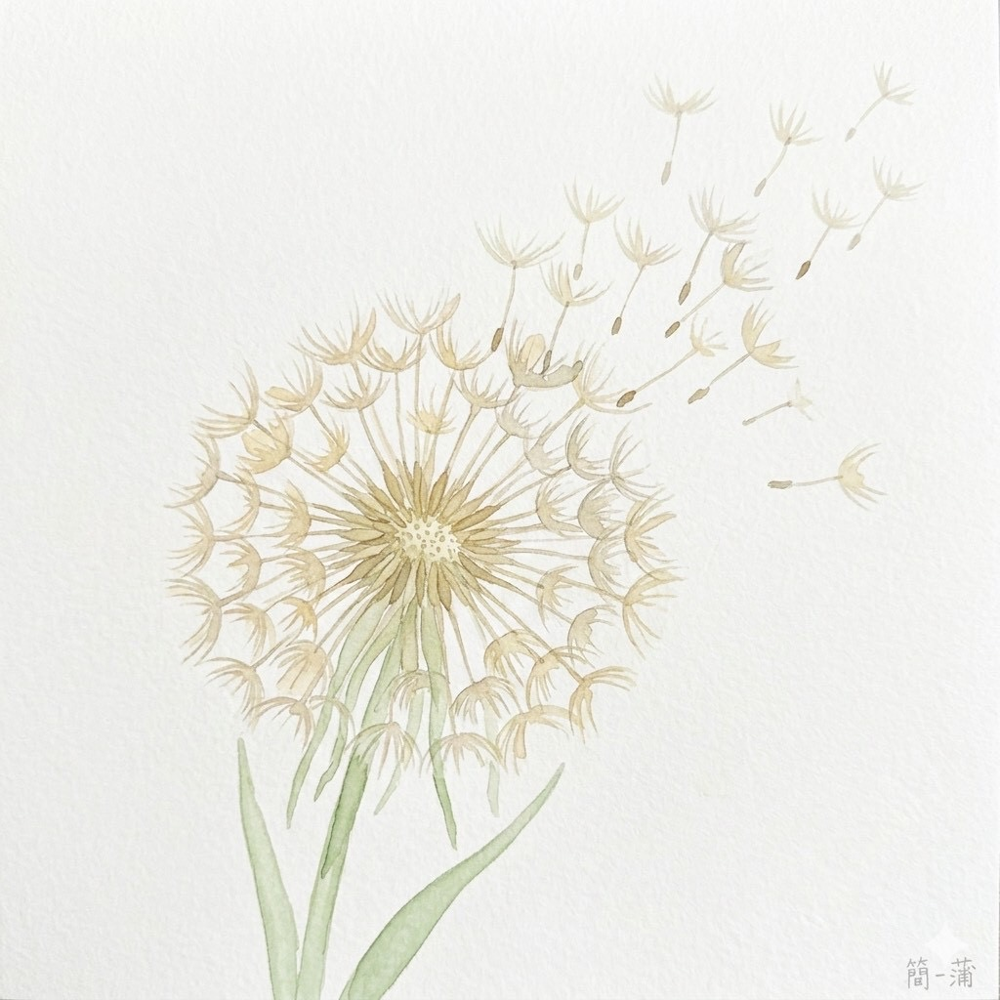
專業交流
跨出基地、對外授課，勇敢且自由地將人智學與共學的慈愛智慧化為種子，隨風在更多土地上落地生根。
- 跨校/跨團體專業外派課程
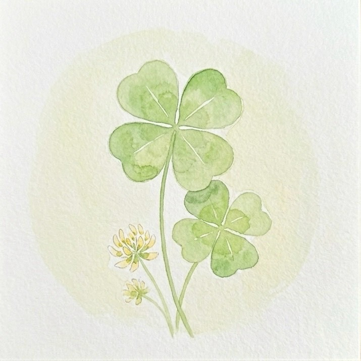
自學陪伴
給予家庭全然的信任與希望，陪伴0-12歲的孩子在天地間踏實探索，看見獨一無二的生命。
- 0-12歲 自學支持與陪伴
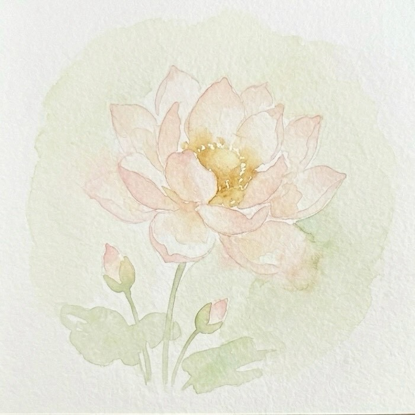
家長共學
大人的自我修行與覺醒，在育兒的紅塵俗事中透過內省穩定身心靈，成為孩子最清明的身教環境。
- 家長身、心、靈工作坊
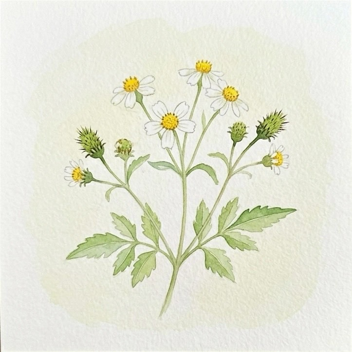
友善市集
帶著走入常民人群的蓬勃生命力，打破同溫層，在喧囂的社區市集裡隨遇而安地散播共好種子。
- 公部門補助款計畫
- 市集擺攤與社區連結
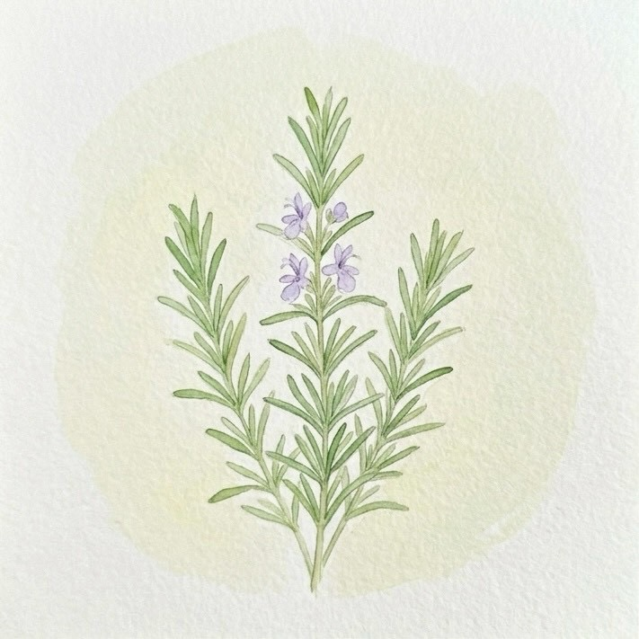
工坊
透過指尖的專注、意志力與溫度，將愛封存於手作物質中，讓人帶走不忘初心的記憶。
- 獨家商品開發
- 蠟燭工坊 / 手作工坊
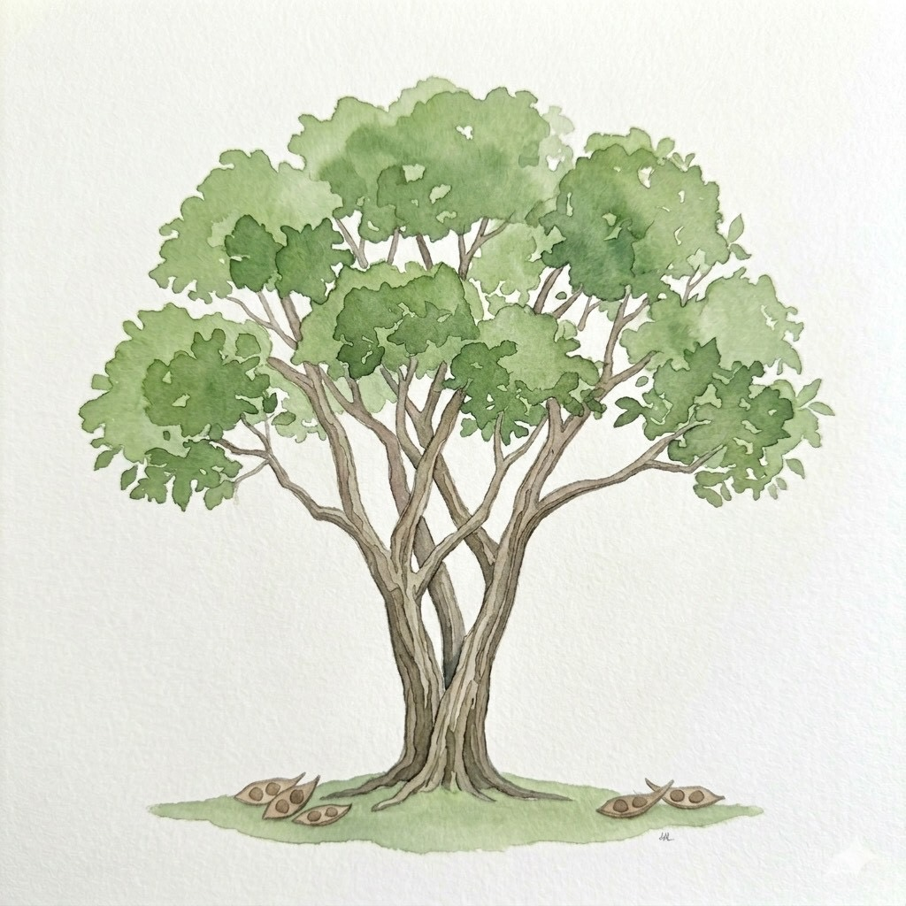
印刷出版
將老師們珍貴的實踐智慧化為沉穩長青的紙本作品，經得起時間考驗，永久陪伴後來的家庭。
- 華德福與人智學相關書籍
- 教學作品整理